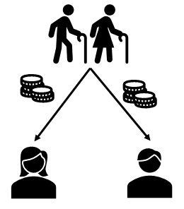
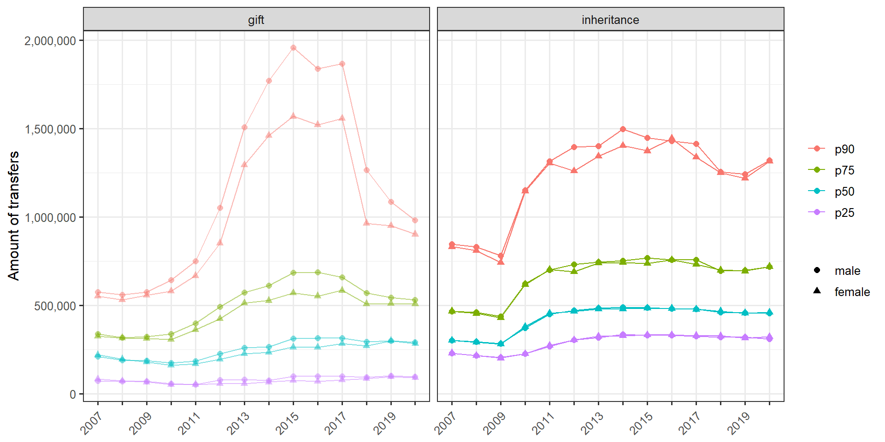
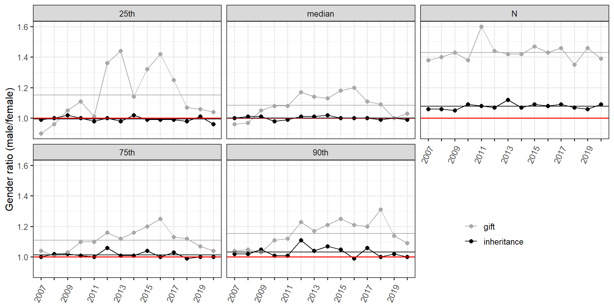
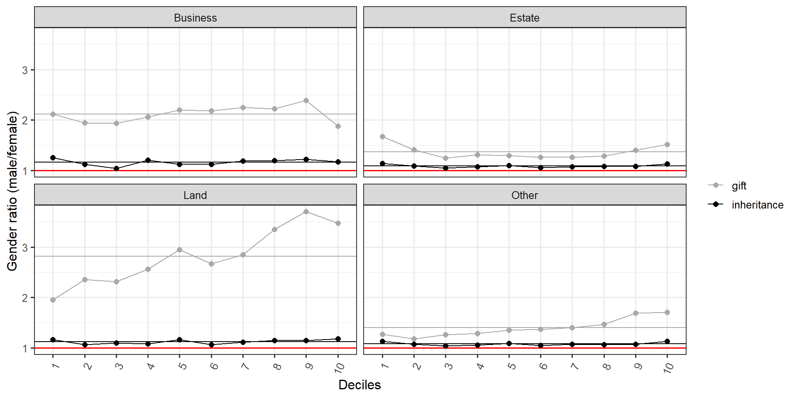
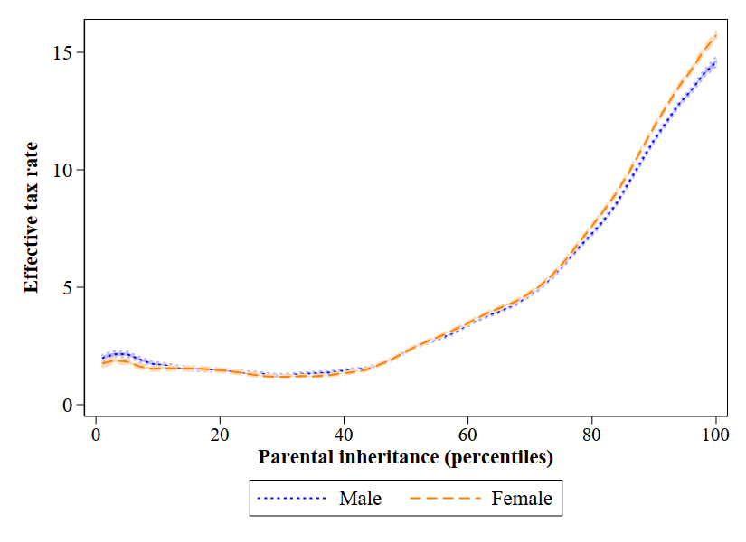
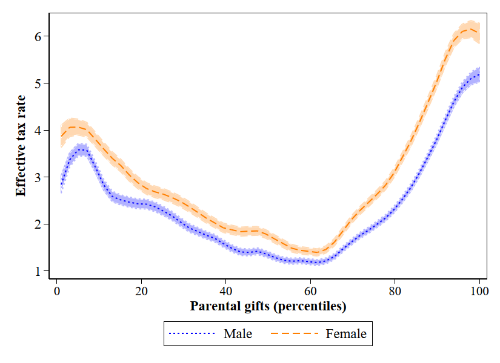
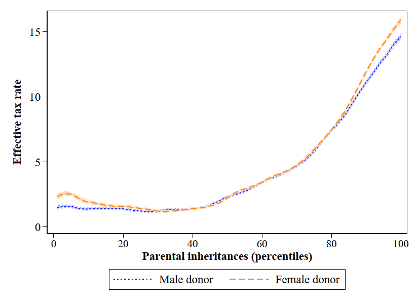
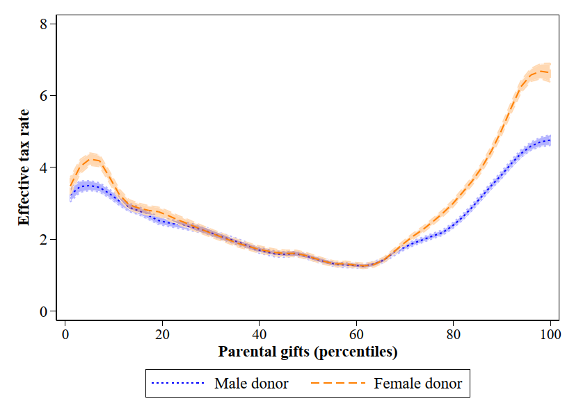
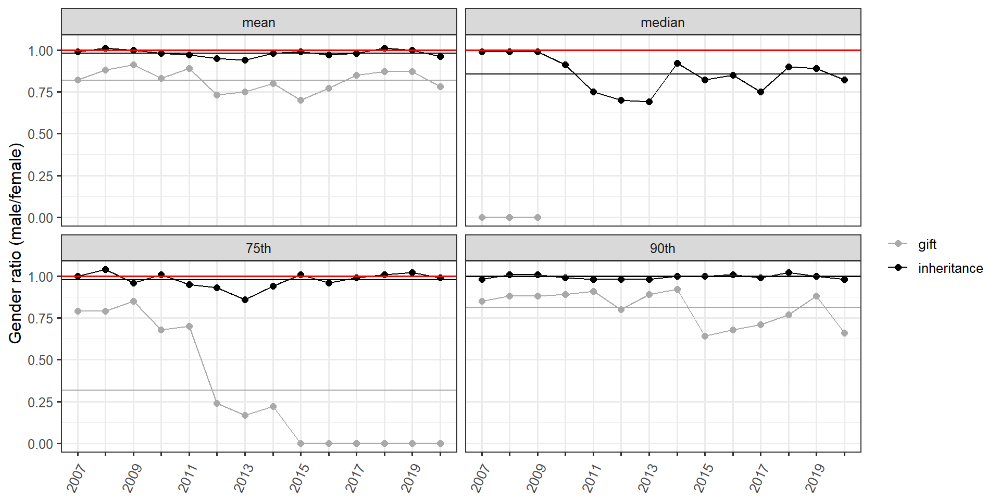
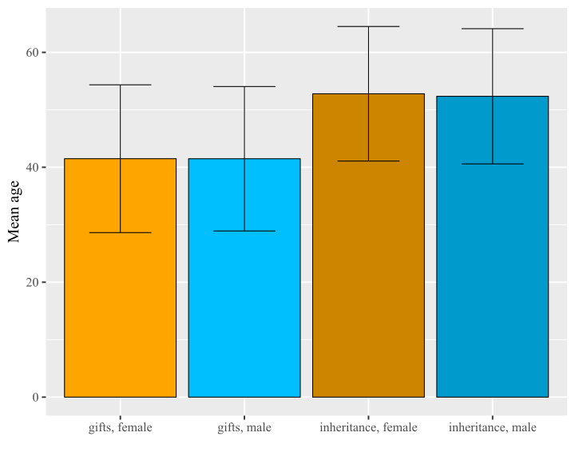

Gender Differences in Wealth Transfers:
Evidence from tax data
Multidisciplinary Seminar Series at the Stone Center on Socio-Economic Inequality
December, 9th 2022
Daria Tisch¹ & Manuel Schechtl²
¹Max Planck Institute for the Study of Societies
²Stone-Center on Socio-Economic Inequality, The Graduate Center, City University of New York
Gender Wealth Gap

Motivation

- Share of inherited wealth in aggregate private wealth in Europe around 50-60% (Alvaredo, Garbinti, and Piketty 2017)
- What’s the role of intergenerational transfers in gender wealth inequality?
- Mixed prior findings
Gender difference in age and amounts of transfers (Bessière and Gollac 2020)
Hardly any gender differences in inheritances in Germany (Leopold and Schneider 2011; Vogel et al. 2021)
Daughters more likely to receive inter vivos transfer but only until they are married (Loxton 2019)
But: Prior research based on survey data
Research Questions & Contributions
Research Questions
- Are there gender differences in parental transfers (inheritances and gifts) in Germany?
- How does the German inheritance and gift tax system shape gender inequalities?
Contributions
Focus on the upper part of the transfer distribution
Differentiation between asset types
Role of the tax system in shaping gender wealth inequality
Theoretical Background
The family as an economic institution
- Family contributes to wealth concentration via intergenerational transfers (Farrell 1993)
- Family as a place where wealth is produced, circulated, controlled, and assigned value (Bessière and Gollac 2020)
Gender inequality in transfers
- Societal beliefs in gender differences in entitlements (Lerner and Mikula 1994; Tisch and Gutfleisch 2022)
- Daughters and sons might receive different asset types
- Unintentional consequences of the tax system (exemptions)
Country context:
German gift and inheritance (tax) law
- Inheritances
- statutory inheritance quota or last will (predefined inheritance + quota)
- restricted testamentary freedom → disinheritance possible but statutory share: minimum inheritance of close relatives is half the amount they would have received in absence of a last will
- Gifts: amount of the gift and the recipient can be freely determined
- Inheritance tax (not an estate tax)
- personal tax exemption (applies to the taxable person): e.g., 400,000 EUR / 10 years for parental transfer
- factual tax exemption (applies to the taxable object): business, forest, furniture, family home etc.
Data
- German inheritance and gift tax data 2007-2020
- Highly sensitive data → restricted access
- Cover bequests and gifts for which a tax claim was requested
- Advantage: Entire population of tax relevant transfers
- Disadvantage: Only entire population of tax relevant transfers
- Coverage: 30% of all bequests, accounting for 73% of all transferred wealth above 10,000 EUR in 2010 (Bach et al. 2014)
Methods
Descriptive analyses
OLS regressions
Dependent variables:
Percentile rank in gifts / inheritances
Effective inheritance / gift tax rate
Predictor variables
- gender (receiver and donor)
- asset type (as dummy variables)
- age (receiver and donor)
- east/west Germany
- year
Gender inequality in gifts but not inheritances?
Number of parental transfers over time
Amount of transfer by percentile and gender over time (in Euros)
Gender ratio in transfers over time
Gender ratio in the number of transfers including specific components by deciles
Regression: gifts (2007-2020)
| M1 (b) | M1 (se) | M2 (b) | M2 (se) | |
|---|---|---|---|---|
| Receiver female | -1.857*** | 0.11 | -3.058*** | 0.77 |
| Business (indicator) | 27.73*** | 0.20 | ||
| Business (indicator) * Receiver female | 3.894*** | 0.36 | ||
| Land (indicator) | -0.107 | 0.23 | ||
| Land (indicator) * Receiver female | -4.262*** | 0.43 | ||
| Other wealth (indicator) | 2.836*** | 0.20 | ||
| Other wealth (indicator) * Receiver female | 0.385 | 0.35 | ||
| Estate (indicator) | 18.06*** | 0.20 | ||
| Estate (indicator) * Receiver female | 4.236*** | 0.34 | ||
| Donor female | -2.301*** | 0.14 | ||
| Donor female * Receiver female | 1.178*** | 0.22 | ||
| Age (receiver) | 0.113*** | 0.01 | ||
| Age (receiver) * Receiver female | -0.0207* | 0.01 | ||
| Age (donor) | -0.124*** | 0.01 | ||
| Age (donor) * Receiver female | 0.0182 | 0.01 | ||
| West | 3.717*** | 0.25 | ||
| West * Receiver female | -0.659 | 0.39 | ||
| Intercept | 51.00*** | 0.23 | 35.24*** | 0.53 |
| N | 273030 | 257712 | ||
| R² | 0.00 | 0.18 | ||
| Gender Gap | -1.857 | -0.369 | ||
| p value (Gender Gap) | 0.00 | 0.00 |
Regression: inheritance (2007-2020)
| M1 (b) | M1 (se) | M2 (b) | M2 (se) | |
|---|---|---|---|---|
| Receiver female | -0.0950 | 0.12 | 0.122 | 1.11 |
| Business (indicator) | 13.44*** | 0.24 | ||
| Business (indicator) * Receiver female | -0.780* | 0.35 | ||
| Land (indicator) | -3.501*** | 0.23 | ||
| Land (indicator) * Receiver female | -0.526 | 0.33 | ||
| Other wealth (indicator) | -1.825*** | 0.33 | ||
| Other wealth (indicator) * Receiver female | 0.226 | 0.48 | ||
| Estate (indicator) | 10.89*** | 0.21 | ||
| Estate (indicator) * Receiver female | -0.200 | 0.30 | ||
| Donor female | 0.999*** | 0.17 | ||
| Donor female * Receiver female | 0.137 | 0.25 | ||
| Age (receiver) | -0.0186 | 0.01 | ||
| Age (receiver) * Receiver female | -0.0179 | 0.02 | ||
| Age (donor) | 0.213*** | 0.01 | ||
| Age (donor) * Receiver female | 0.0246 | 0.02 | ||
| West | 1.598*** | 0.39 | ||
| West * Receiver female | -1.146* | 0.57 | ||
| Intercept | 50.50*** | 0.22 | 24.92*** | 0.80 |
| N | 240100 | 229874 | ||
| R² | 0.00 | 0.05 | ||
| Gender Gap | -0.095 | 0.060 | ||
| p value (Gender Gap) | 0.42 | 0.61 |
Let’s look at how the tax system shapes gender inequality.
Effective inheritance tax rate by gender of receiver (2007-2020)
dag 
Effective gift tax rate by gender of receiver (2007-2020)

Effective inheritance tax rate by gender of donor (2007-2020)

Effective gift tax rate by gender of donor (2007-2020)

Gender ratio of effective tax rate over time
Regression: effective gift tax (2007-2020)
| M1 (b) | M1 (se) | M2 (b) | M2 (se) | |
|---|---|---|---|---|
| Receiver female | 0.549*** | 0.02 | 0.480** | 0.17 |
| Gifts, percentile | 0.0113*** | 0.00 | 0.0287*** | 0.00 |
| Business (indicator) | -2.138*** | 0.05 | ||
| Business (indicator) * Receiver female | -0.448*** | 0.08 | ||
| Land (indicator) | -1.260*** | 0.05 | ||
| Land (indicator) * Receiver female | 0.0853 | 0.09 | ||
| Other wealth (indicator) | 1.235*** | 0.04 | ||
| Other wealth (indicator) * Receiver female | 0.127 | 0.08 | ||
| Estate (indicator) | -1.147*** | 0.04 | ||
| Estate (indicator) * Receiver female | -0.752*** | 0.08 | ||
| Donor female | 0.0220 | 0.03 | ||
| Donor female * Receiver female | -0.338*** | 0.05 | ||
| Age (receiver) | 0.0656*** | 0.00 | ||
| Age (receiver) * Receiver female | -0.0102*** | 0.00 | ||
| Age (donor) | 0.00333** | 0.00 | ||
| Age (donor) * Receiver female | 0.00848*** | 0.00 | ||
| West | 0.659*** | 0.05 | ||
| West * Receiver female | -0.188* | 0.08 | ||
| 0.00719*** | 0.00 | |||
| Intercept | 2.812*** | 0.05 | -0.623*** | 0.12 |
| N | 271087 | 255949 | ||
| R² | 0.02 | 0.11 | ||
| Gender Gap | 0.549 | 0.348 | ||
| p value (Gender Gap) | 0.00 | 0.00 |
Regression: effective inheritance tax
| M1 (b) | M1 (se) | M2 (b) | M2 (se) | |
|---|---|---|---|---|
| Receiver female | 0.0804*** | 0.02 | -0.0708 | 0.18 |
| Inheritance, percentile | 0.119*** | 0.00 | 0.119*** | 0.00 |
| Business (indicator) | -0.558*** | 0.04 | ||
| Business (indicator) * Receiver female | 0.463*** | 0.06 | ||
| Land (indicator) | -0.311*** | 0.04 | ||
| Land (indicator) * Receiver female | 0.223*** | 0.05 | ||
| Other wealth (indicator) | 0.822*** | 0.05 | ||
| Other wealth (indicator) * Receiver female | -0.378*** | 0.08 | ||
| Estate (indicator) | -1.386*** | 0.03 | ||
| Estate (indicator) * Receiver female | -0.0885 | 0.05 | ||
| Donor female | -0.114*** | 0.03 | ||
| Donor female * Receiver female | -0.0548 | 0.04 | ||
| Age (receiver) | -0.0115*** | 0.00 | ||
| Age (receiver) * Receiver female | -0.00309 | 0.00 | ||
| Age (donor) | 0.0276*** | 0.00 | ||
| Age (donor) * Receiver female | 0.00216 | 0.00 | ||
| West | 0.117 | 0.06 | ||
| West * Receiver female | 0.0355 | 0.09 | ||
| 0.00849*** | 0.00 | |||
| Intercept | -0.883*** | 0.04 | -2.210*** | 0.13 |
| N | 239947 | 229733 | ||
| R² | 0.38 | 0.39 | ||
| Gender Gap | 0.080 | 0.070 | ||
| p value (Gender Gap) | 0.00 | 0.00 |
Conlusion
Gender gap in total number of inheritances: 1.08
Gender gap in total number of gifts: 1.43
Gender gap in the amounts of inheritances: 1.00 (p50), 1.02 (p90)
Gender gap in the amounts of gifts: 1.07 (p50), 1.20 (p90)
→ Gender differences more pronounced in gifts compared to inheritances
→ Asset types and gender of donor explain gender transfer gap in amounts
- Gender inheritance tax gap : 0.97
- Gender gift tax gap : 0.79
→ Tax system with generous exemptions amplifies gender inequality
Contact: tisch@mpifg.de | dariatisch.github.io
References
No age differences
